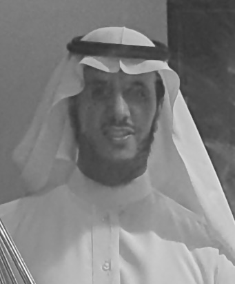

I'm Dr. Hamad Alrashede, a Computer Science researcher specializing in SDN Security, Blockchain, Cybersecurity, and IoT Security — turning advanced research into resilient, real-world solutions.

A highly motivated Computer Science PhD with a proven record of research in SDN Security, Cellular Network Security, Blockchain, Cybersecurity, and IoT Security. I am the author of multiple peer-reviewed scientific publications and an experienced academic reviewer for leading international journals.
My doctoral work focused on securing the East-West interface and distributed controllers of Software-Defined Networks (SDN) using blockchain technology — bridging cutting-edge cryptographic concepts with practical network defense.
I'm eager to leverage advanced technical expertise, strong leadership abilities, and well-developed analytical and problem-solving skills to contribute significantly to forward-thinking organizations and research institutions.
Two decades of academic excellence across Saudi Arabia's leading universities.
Peer-reviewed contributions to SDN security, blockchain, and mobile network defense.
Open to research collaborations, academic opportunities, and challenging roles in cybersecurity and emerging technologies.